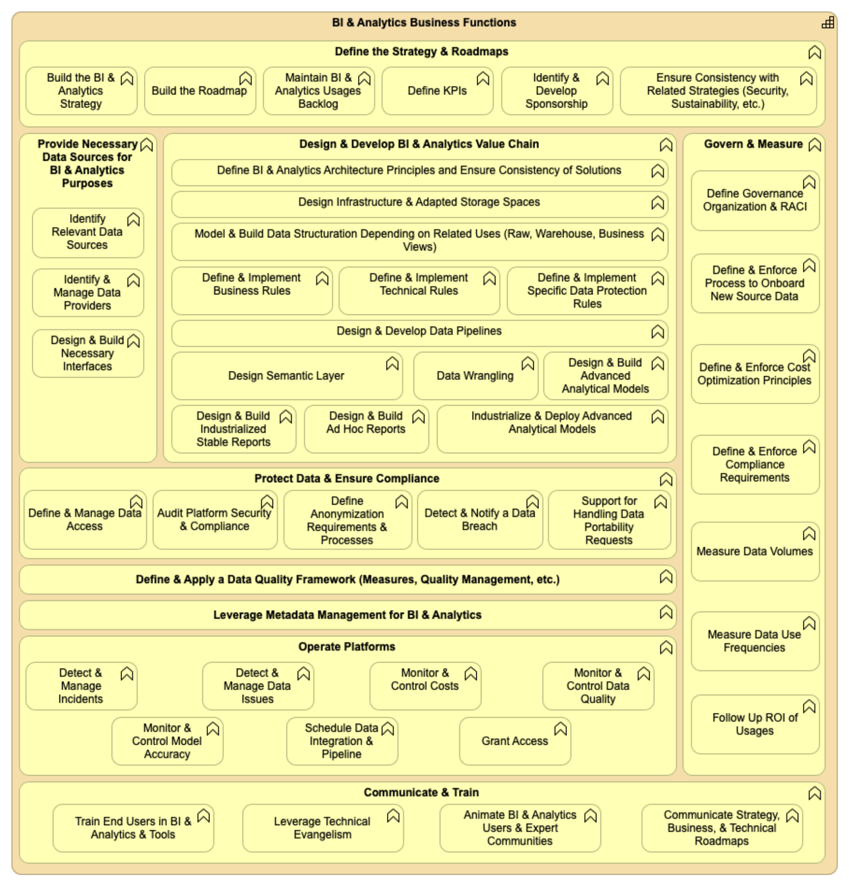

Preface
The Open Group
The Open Group is a global consortium that enables the achievement of business objectives through technology standards. Our diverse membership of more than 900 organizations includes customers, systems and solutions suppliers, tool vendors, integrators, academics, and consultants across multiple industries.
The mission of The Open Group is to drive the creation of Boundaryless Information Flow™ achieved by:
- Working with customers to capture, understand, and address current and emerging requirements, establish policies, and share best practices
- Working with suppliers, consortia, and standards bodies to develop consensus and facilitate interoperability, to evolve and integrate specifications and open source technologies
- Offering a comprehensive set of services to enhance the operational efficiency of consortia
- Developing and operating the industry’s premier certification service and encouraging procurement of certified products
Further information on The Open Group is available at www.opengroup.org.
The Open Group publishes a wide range of technical documentation, most of which is focused on development of Standards and Guides, but which also includes white papers, technical studies, certification and testing documentation, and business titles. Full details are available at www.opengroup.org/library.
The TOGAF® Standard, a Standard of The Open Group
The TOGAF Standard is a proven enterprise methodology and framework used by the world’s leading organizations to improve business efficiency.
This Document
This document is the TOGAF® Series Guide to Information Architecture: Business Intelligence & Analytics. It has been developed and approved by The Open Group.
This document is structured as follows:
- Chapter 1 provides a high-level introduction to this document, introducing the BI & Analytics topics
- Section 1.1 describes the ArchiMate® modeling notation as used in this document
- Chapter 2 describes the BI & Analytics capability, introducing the reference model from a high-level point of view
- Chapter 3 proposes an Architecture Development Method (ADM) specialization for BI & Analytics and data platforms
- Chapter 4 proposes detailed functional reference models describing BI & Analytics capabilities
The intended audience for this document is Enterprise Architects, Data Architects, and any IT professional working on data BI topics, etc.
More information is available, along with a number of tools, guides, and other resources, at www.opengroup.org/architecture.
About the TOGAF® Series Guides
The TOGAF® Series Guides contain guidance on how to use the TOGAF Standard and how to adapt it to fulfill specific needs.
The TOGAF® Series Guides are expected to be the most rapidly developing part of the TOGAF Standard and are positioned as the guidance part of the standard. While the TOGAF Fundamental Content is expected to be long-lived and stable, guidance on the use of the TOGAF Standard can be industry, architectural style, purpose, and problem-specific. For example, the stakeholders, concerns, views, and supporting models required to support the transformation of an extended enterprise may be significantly different than those used to support the transition of an in-house IT environment to the cloud; both will use the Architecture Development Method (ADM), start with an Architecture Vision, and develop a Target Architecture on the way to an Implementation and Migration Plan. The TOGAF Fundamental Content remains the essential scaffolding across industry, domain, and style.
Trademarks
ArchiMate, FACE logo, Making Standards Work, Open O logo, Open O and Check certification logo, OSDU, Platform 3.0, The Open Group, TOGAF, UNIX, UNIXWARE, and X logo are registered trademarks and Boundaryless Information Flow, Build with Integrity Buy with Confidence, Commercial Aviation Reference Architecture, Dependability Through Assuredness, Digital Practitioner Body of Knowledge, DPBoK, EMMM, FACE, FHIM Profile Builder, FHIM logo, FPB, Future Airborne Capability Environment, IT4IT, IT4IT logo, O-AA, O-DEF, O-HERA, O-PAS, Open Agile Architecture, Open FAIR, Open Footprint, Open Process Automation, Open Subsurface Data Universe, Open Trusted Technology Provider, Sensor Integration Simplified, SOSA, and SOSA logo are trademarks of The Open Group.
Hadoop is a registered trademark of the Apache Software Foundation (ASF).
Java is a registered trademark of Oracle and/or its affiliates.
All other brands, company, and product names are used for identification purposes only and may be trademarks that are the sole property of their respective owners.
About the Authors
AXA Data Architecture Community
This document is inspired by Data Architecture deliverables donated to The Open Group by AXA. They are the results of the Data Architects community’s work led by the group and with the contribution of affiliates mainly in France, Germany, Belgium, United Kingdom, Japan, US, Hong Kong, Spain, Switzerland, and Italy from 2015 to 2021. The aim of this community is to share Data Architecture best practices across the AXA organization to improve and accelerate the architecture delivery.
AXA is a global insurer (www.axa.com).
Céline Lescop – Author
Céline holds a Master’s degree (1996) in Computer Science (www.ensiie.fr). She was a Data Project Leader in the pharmaceutical industry from 1999 until 2012 (Galderma & Astrazeneca), an Architect and TOGAF® trainer from 2012 to 2015 at Arismore (The Open Group, France), and has been an Enterprise Architect at AXA leading Data Architecture practice since 2016 and the Digital Sustainability program since 2020.
Jean-Baptiste Piccirillo – Author
Jean-Baptiste holds a Master’s degree (2010) in Computer Science (www.ensiie.fr). He was an Architect until 2015 for Arismore (The Open Group, France), a Data Scientist for AXA from 2015 to 2018, and he is currently a Data Architecture and Data Management Consultant for Rhapsodies Conseil (www.rhapsodiesconseil.fr) supporting AXA.
Acknowledgements
(Please note affiliations were current at the time of approval.)
The Open Group gratefully acknowledges members of The Open Group Architecture Forum past and present for their contribution in the development of this document:
- Berenger Caudron, Data Architect at AXA Group Operation
- Chris Harding, Principal, Lacibus Ltd.
- Guillaume Hervouin, Data Architect at AXA Group Operation
- Jann-Philipp Zocher, Data Architect at AXA Germany
The Open Group gratefully acknowledges the following reviewers who participated in the Company Review of this document:
- Chris Harding
- James Thomas
Referenced Documents
The following documents are referenced in this TOGAF® Series Guide:
C226 ArchiMate® 3.2 Specification, a standard of The Open Group (C226), published by The Open Group, October 2022; refer to: www.opengroup.org/library/c226
C220 TOGAF® Standard, 10th Edition, a standard of The Open Group (C220), published by The Open Group, April 2022; refer to: www.opengroup.org/library/c220
G176 TOGAF® Series Guide: Business Scenarios (G176), published by The Open Group, April 2022; refer to: www.opengroup.org/library/g176
Inmon 1995 What is a Data Warehouse?, W.H. Inmon, Prism, Volume 1, Number 1, 1995; refer to: https://www.comp.nus.edu.sg/~lingtw/cs4221/dw.pdf
This document describes information architecture techniques to support architecture work using Business Intelligence (BI) & Analytics.
This document includes:
- Reference models for the assessment and design of BI & Analytics capabilities; see Chapter 2, Section 4.2, and Section 4.3
- An adaptation of the TOGAF ADM to support the BI & Analytics capability; see Section 3.1 and Section 3.2
These best practices are based on project experiences and have been generalized to support wide usage in any organization. They aim to:
1.1 The ArchiMate® Modeling Notation
The reference models in this document are described using the ArchiMate modeling notation, as defined in the ArchiMate Specification, a standard of The Open Group [C226].
The ArchiMate elements used in this document are shown in Figure 1.
Figure 1: The ArchiMate Modeling Notation Elements Used in this Document
Standard definitions:
- Goal:
A high-level statement of intent, direction, or desired end state for an organization and its stakeholders.
- Requirement:
A statement of need defining a property that applies to a specific system as described by the architecture.
- Business function:
A collection of business behavior based on a chosen set of criteria such as required business resources and/or competencies, and is managed or performed as a whole.
Business functions are closely aligned to an organization, but not necessarily explicitly governed by the organization.
- Application function:
Automated behavior that can be performed by an application component.
The BI & Analytics capability refers to the people, processes, organizations, and systems put together to create value-added information from relevant decision-making data of the organization. This capability breaks applicative data siloes and allows the structuring and leveraging of data according to decision-making and analytics use-cases. It includes business value, data quality, availability, and security to deliver the required common data to relevant reporting or analytics use-cases.
This capability is founded on reference business functions and reference application functions. This chapter covers the high-level functions reference model, and their definitions. More detailed functions are available in the dedicated reference model part of this document; see Sections 4.2 and 4.3.
2.1 BI & Analytics High-Level Reference Model
Figure 2: BI & Analytics Capability – High-Level Functions
2.2 BI & Analytics High-Level Business Functions Description
Table 1: BI & Analytics High-Level Business Functions
|
Business Function |
Description |
|
Define the Strategy & Roadmaps |
Define the BI & Analytics vision for the organization, and how it contributes to organization objectives. Concretize this vision through a well-defined BI & Analytics strategy and roadmap. |
|
Provide Necessary Data Sources for BI & Analytics Purposes |
Identify the necessary data sources needed by the BI & Analytics strategy. Make the data available for related BI & Analytics use-cases. |
|
Design & Develop BI & Analytics Value Chain |
Design and implement the data value chain to transform raw data into a “ready-to-use” business view serving BI & Analytics use-cases. |
|
Protect Data & Ensure Compliance |
Put in place all processes and tools to protect available data and ensure compliance; e.g. General Data Protection Regulation (GDPR). |
|
Define & Apply a Data Quality Framework |
Put in place all processes and tools to ensure that the quality of provided data is at the expected level regarding business requirements. |
|
Leverage Metadata Management for BI & Analytics |
Implement processes and tools to leverage metadata management capabilities to document data and data lineage on the BI & Analytics value chain from operational data sources to data consumption. |
|
Operate Platforms |
Operate technical functions supporting BI & Analytics capability. |
|
Govern & Measure |
Govern the transformation of the BI & Analytics capability: measure data volumes, costs, carbon footprint, and actual value. |
|
Communicate & Train |
Communicate around BI & Analytics value, organize training plan for technical community (Data Engineer, Data Scientist, …) and business end-users. |
2.3 BI & Analytics High-Level Application Functions Description
Table 2: BI & Analytics High-Level Application Functions
|
Application Function |
Description |
|
Data Integration |
Services that allow the integration of different data from one or more providers to enable data ingestion by consumers and data distribution for BI & Analytics purposes. This could be done, for example, by batch, streaming, interface, etc. |
|
Data Storage |
Services that allow the persistent storage of structured, semi-structured, or unstructured data. |
|
Data Processing |
Services that allow data transformation, including basic preparations or more advanced features, calculations, leveraging statistics, or data science. |
|
Information Reporting & Dashboarding |
Services allowing reporting and dashboarding activities using data stored in BI & Analytics. |
|
Decision Support Analysis & Visualization |
Services allowing data discovery and visualization using data stored in BI & Analytics. |
|
Administration |
Administration tasks required to support BI & Analytics capabilities, such as access management, scheduling, etc. |
|
Data Access for Engineering & Data Management Use |
Direct access to the data of BI & Analytics for advanced data stewards, data engineers, data scientists, data administrators, etc. |
|
Development |
Development capabilities including Integrated Development Environments (IDE) development integrated environment and continuous delivery chains for data scientists, data engineers, etc. |
|
Monitoring |
Monitoring services for infrastructure, network, and applications to guarantee the agreed service level. |
3.1 TOGAF ADM Specialization for BI & Analytics Capability
A synthesis of key actions related to the TOGAF ADM phases (Preliminary, A, B, C, D, E, F, G) that should be done in the context of a BI & Analytics capability delivery is described in this chapter.
Table 3: BI & Analytics Capability Delivery Related to TOGAF ADM Phases
|
TOGAF ADM Phase |
BI & Analytics Recommendations |
|
Preliminary |
Confirm that the proper Enterprise Architecture capabilities are in place to implement the model: repository, data sources, platforms, etc. Check that a multi-disciplinary team is in place with the prerequisite skills to architect an effective BI & Analytics capability. |
|
A – Architecture Vision |
Identify the relevant principles for BI & Analytics architecture and define them. Develop an overview of existing pain points related to reporting, data analytics, data science, and statistics data from a BI & Analytics user point of view (the TOGAF Business Scenario technique, can be used for that purpose [G176]). Develop the value proposition for the target BI & Analytics capability considering the existing or new business usages, improvement expected (data available, data quality, data documentation, data accessibility). |
|
B – Business Architecture |
Identify the as-is and to-be business users of the BI & Analytics capability. List the BI & Analytics usages on this business scope: futures, or existing usages to be improved. Define the target operational business organization to manage a BI & Analytics usage, from design to continuous deployment and maintenance. Define the value of each usage and the priority of each one, based, for example, on complexity and value for the organization. Identify the key data – at business object level first – required to deliver the expected use-cases. Evaluate the coverage of the as-is capability and identify the gap with to-be requirements. The business functions provided in Section 2.2 can be used as a guide to the steps. |
|
C – Information Systems Architectures |
Data:
Application:
The application functions provided in Section 2.3 can be used as a guide to the steps. |
|
D – Technology Architecture |
Identify requirements for data platforms to support BI & Analytics operations. Specify technology support for data modeling. |
|
E – Opportunities and Solutions |
Use the application reference models in this document to challenge solution providers around BI & Analytics. Reference models can be used as a basis to build selection criteria of the solutions. |
|
F – Migration Planning |
Refer to Section 3.2 to address the migration from a legacy BI & Analytics technical solution to a new generation one. |
|
G – Implementation Governance |
Organize compliance review with BI & Analytics projects to check that they respect BI & Analytics principles and the Target Architecture. |
3.2 Reference BI & Analytics Roadmap Steps (ADM Phase F – Migration Planning)
Looking back at the history of BI & Analytics on the market, different architecture pattern styles and technical solutions have been used. For a given organization, the coexistence of several BI & Analytics capabilities using different technologies and duplicating data comes with difficulties if the following principles quoted in the TOGAF Standard [C220] are not respected:
- Principle 11: Data is Shared
- Principle 20: Control Technical Diversity
Users have access to the data necessary to perform their duties; therefore, data is shared across enterprise functions and organizations (…) It is less costly to maintain timely, accurate data in a single application, and then share it, than it is to maintain duplicative data in multiple applications.
For a given Organization Information System having the data kept first in an “Infocenter” and then copied in a “data warehouse” for other analytics is costly and complex.
Technological diversity is controlled to minimize the non-trivial cost of maintaining expertise in and connectivity between multiple processing environments.
For a given Organization Information System maintaining both data warehouse running on Relational Database Management System (RDBMS) and Data Lake on Hadoop® comes with IT cost and complexity that should be justified with business value.
This section describes an approach to ensure that when a new technology/pattern is introduced for the BI & Analytics, the replacement of the legacy architecture by the new one is performed. Replacing a capability that is paid and up-and-running in an organization is never straightforward as it requires investment that is not easy to justify from a business point of view. This approach is agnostic of the technical solutions.
The example below deals with the shift from an enterprise data warehouse running on a relational database to new generation BI & Analytics data platforms that deliver the possibility to support volume x variety x velocity needs both for data storage (structured, unstructured, evens, etc.) and for data processing (file processing, SQL, graph processing, streams processing, machine learning, etc.).
Four Transition Architectures are described below.
|
Definition |
Transition Architecture A formal description of one state of architecture at an architecturally significant point in time. Note: One or more Transition Architectures may be used to describe the progression in time from the Baseline to the Target Architecture [C220]. A Transition Architecture is defined as a relatively stable state of the architecture that exists for a limited period of time. Operations can run normally but the Transition Architecture does not realize the full vision that is covered by the Target Architecture. |
3.2.1 Step 1
Life before the new generation BI & Analytics data platform – a generic “as-is” situation is described here, but the level of maturity can vary a lot depending on the organization including no existing as-is enterprise data warehouse.
Figure 3: Step 1 – As-Is Architecture
- Transactional systems (for example, CRM, ERP, …) stand alone with their databases
- Some transactional systems may include embedded BI & Analytics capabilities
- Some transactional systems based on an RDBMS contribute data to a data warehouse
- The data warehouse is the single point of truth and is the reference database of the enterprise historical data
In some organizations, the single point of storage may not be achieved in the as-is, and the full scope of data warehouse data is covered by several systems that are more or less interconnected.
Table 4: BI & Analytics Roadmap Step 1 Details
|
Benefits |
One or more reference databases for RDBMS historical data and a single point of truth for BI |
|
Missing Capabilities |
Store raw data Analyze non-relational data Store analytical results datasets Process analytics “in-database” with no impact on the quality of service Shadow BI & Analytics to gather data that is not available in the data warehouse, at least for exploration and prototyping |
|
Possible Triggers to Proceed to Step 2 |
Technical and/or cost limits on the volume of data processed by the RDBMS solutions Technical and/or cost limits on the volume of data stored by the RDBMS solutions Integration of new data in the data warehouse is too long and too expensive New analytics business needs (variety, volume, velocity) New requirement for an event processing application to provide recommendations based on the combination of events and historical data, like “next best customer action”, “fraud detection” … Reduce shadow BI & Analytics |
3.2.2 Step 2
[Transition step] The introduction of the new generation BI & Analytics data platforms.
Figure 4: Step 2 – Introduction of the New Generation Platform
- The data warehouse feeds the new generation BI & Analytics data platforms with cleansed data, which they would not receive otherwise
- The new generation BI & Analytics data platform is used to address specific use-cases that process new data sources (e.g., applications log files, connected device)
- In that Transition Architecture, some data marts, like Data Mart #3 in Figure 4, that have to be delivered in short delays to the business, are fed some data from the enterprise data warehouse, and also from the new generation BI & Analytics data platforms
- New BI & Analytics use-cases can use new generation BI & Analytics data platform historical data and knowledge capabilities to improve decision-making during a business process
Those applications may create new data either through a human interface or by applying an algorithm on data. This new data might integrate the new generation BI & Analytics data platforms through the ingestion process to keep the history.
Table 5: BI & Analytics Roadmap Step 2 Details
|
Benefits |
Analyze relational and non-relational data Access to a Data Sand Box New requirements for applications processing events to provide recommendations based on a combination of events and historical data like “next best customer action”, “fraud detection”… |
|
Missing Capabilities |
Double storage of historical data: no single point of truth for analytics New generation BI & Analytics data platforms do not store raw data coming in from the data warehouse Data lineage is difficult due to the loss of raw data |
|
Possible Triggers to Proceed to Step 3 |
Need for a single point of truth for analytics: requirement to cross all data Technical roadmap requires technical upgrade on existing solution that can be a good opportunity to migrate to new generation BI & Analytics data platforms Agility to meet new analytic requirement or application Requirement for data lineage Reduce shadow BI & Analytics |
3.2.3 Step 3
[Transition step] The new generation BI & Analytics data platforms feed the data warehouse with new data, and cover the full scope of raw data.
Figure 5: Step 3 – The New Generation Platform Grows
- Concerning data historically imported into the data warehouse, and also to the new generation BI & Analytics data platforms, the preferred approach is not to feed the data warehouse with the new generation BI & Analytics data platforms but for the data mart to go directly to Step 4 (nevertheless, this approach might be justified in some cases)
- In that step, data marts and applications are unplugged from the enterprise data warehouse to new generation BI & Analytics data platforms in an opportunistic and/or step-by-step approach, like “Data Mart #3” in Figure 4
- Data flows from transactional applications to the new generation BI & Analytics data platforms are different from those feeding the enterprise data warehouse, as they extract:
- The new generation BI & Analytics data platforms act as the persistent raw data historical storage and information and knowledge preparation for the data warehouse replacing staging area or Operational Data Store (ODS)
- The opportunity of this Transition Architecture has to be checked against going directly to Step 4
In this transition step, some may now be fed by both the new generation BI & Analytics data platform and the enterprise data warehouse, like “Transactional Application #1” in Figure 5
— Raw data from the transactional application
— All the metadata from the transactional application including foreign keys, data dictionary
Such information is rarely explicit in the flow feeding the data warehouse. Indeed, that metadata may not be required in the data warehouse as some of this information is kept in the data warehouse modeling.
— All available data on a given business object, like a customer or a contract
This is not limited to the scope of data required by the analytic use-case. This approach is a default one on the new generation BI & Analytics data platforms, and is allowed because of the low data cost storage.
Table 6: BI & Analytics Roadmap Step 3 Details
|
Benefits from Previous Steps |
Analyze relational and non-relational data Access to a Data Sand Box New requirement for an applications processing event to provide recommendations based on the combination of events and historical data, like “next best customer action”, “fraud detection”… |
|
New Benefits |
The new generation BI & Analytics data platforms store raw data, integrated data, and transformed/calculated data: all data marts can be plugged into the new generation BI & Analytics data platforms Data is available for data scientists in the Data Sand Box, increasing predictive capability and reducing shadow BI & Analytics Any new application requiring historical data can be built on the new generation BI & Analytics data platforms: agility to meet new analytic requirements Data lineage facilitated thanks to the storage of raw data |
|
Missing Capabilities |
Double storage of historical data: no single point of truth for analytics and double cost |
|
Possible Triggers to Proceed to Step 4 |
Cost avoidance, optimization (storage, projects: work on data before modeling, …) Double ingestion flow to the data warehouse and the new generation BI & Analytics data platforms to maintain Difficulties caused by the double storage of historical data: no single point of truth Opportunistic approach: technical roadmap or new business requests a major upgrade on the data warehouse architecture |
3.2.4 Step 4
[Target Architecture] The new generation BI & Analytics data platforms feed all the data marts and cover all the BI & Analytics requirements from business users.
Figure 6: Step 4 – Target Architecture
Structurally, because of its capacity to store more volume, variety, and velocity, the new generation BI & Analytics data platforms can cover the scope of the data warehouse data and more. The conviction was established that having two repositories, data warehouse and new generation BI & Analytics data platforms for historical data, is not a reliable target vision. It will take time, but at the target new generation BI & Analytics data platforms will cover the full scope of the data warehouse, including the harmonized enterprise data model built to answer analytics requirements.
Existing data marts are plugged into the new generation BI & Analytics data platforms, which become the single point of truth for historical data storage.
Table 7: BI & Analytics Roadmap Step 4 Details
|
Benefits from the Previous Steps |
Analyze relational and non-relational data Access to a Data Sand Box New requirement for an applications processing event to provide recommendations based on the combination of events and historical data, like “next best customer action”, “fraud detection”… The new generation BI & Analytics data platforms store raw data, integrated data, and transformed/calculated data Data is available for data scientists in the Data Sand Box, increasing predictive capability and reducing shadow BI & Analytics Any new application requiring historical data can be built on the new generation BI & Analytics data platforms Data lineage facilitated thanks to the storage of raw data |
|
New Benefits |
No need to support maintenance on previous data warehouse infrastructure New generation BI & Analytics data platforms store raw data and all relevant data New generation BI & Analytics data platform is the single point of truth for historical data: reference database for historical raw data storage from which information and knowledge can be reprocessed any time, for any purpose All data stored in a single place: in principle we should not have a situation where some relevant data is not in the new generation BI & Analytics data platforms Investments in existing data marts and associated tools are preserved |
|
Risks to Take into Account |
There is a risk that some requirements met by the data warehouse architecture are not covered anymore in this step: to make that major shift possible, requirements currently covered in data warehouse have to be identified carefully and covered if required by the architecture based on the new generation BI & Analytics data platforms Data governance and metadata management will have to be piloted carefully in the new generation BI & Analytics data platforms to be able to leverage the full value of having all relevant raw data and information stored and secured in a single place |
Step 4 is the proposed final target for a BI & Analytics capability. Steps 2 and 3 are possible Transition Architectures, but each organization will have to define its own Transition Architecture(s) when designing the level of its roadmap.
Indeed, the journey from Step 1 to Step 4 might be quite different depending on the current state of the organization:
- When the as-is architecture already includes an enterprise data warehouse, the shift from the data warehouse as the single point of truth for historical data storage might be longer than in an organization that has no enterprise data warehouse, and that will directly build the new generation BI & Analytics Target Architecture
- Not all organizations will be able to complete the journey within three years, but within five years the new generation BI & Analytics architecture should have taken a significant place in the architecture as the single point of truth for historical data storage
|
Information |
Existing systems that result from big investments and that meet business requirements with an acceptable level of service will not be replaced until a technical migration is required or a new business need emerges. The objective is to focus first on added value and to maximize the use of past investments. |
4.1 BI & Analytics Reference Model – Goals
Figure 7: Goals Targeted by Stakeholders with BI & Analytics Capability
Table 8: Objectives and Goals of the BI & Analytics Reference Models
|
ID |
Goals |
Description |
Key Performance Indicators (KPIs) |
|
1 |
Some regulations impact data management:
|
↑ number of datasets tagged with the level of privacy ↓ data leakages |
|
|
2 |
Comply with Security – data classification and encryption |
Data is classified as secret, confidential, public, etc. depending on its sensitivity and the evaluation of associated risk. It is then encrypted with encryption keys that are managed depending on this classification. |
↓ security breaches |
|
3 |
Comply with Security – data leakage |
Data should be protected from eavesdropping, leakage, or theft according to its classification. |
↓ security breaches |
|
4 |
Comply with Security – identity and access management |
Management of electronic or digital identities, including the organizational policies for managing digital identity as well as the technologies needed to support identity management. |
↓ security breaches |
|
5 |
Comply with Security – infrastructure baseline |
A minimal security baseline to be provided for the infrastructure (administrator password changes on material delivered, port management, etc.). |
↓ security breaches |
|
6 |
Data Quality is Under Control |
Data quality should remain at a suitable level to ensure the operational performance of the organization. |
↑ number of datasets monitored by business quality rule |
|
7 |
Democratize Use of Data |
Users should have access to shared semantics and data required to perform their duties through tools appropriate to their analytics requirements – from ready-to-read reports to advanced queries or analytics. This principle of data democratization will continually “bump up against” the principle of data security. Under no circumstances will the data sharing principle cause confidential data to be compromised. |
↑ number of decisions taken under data inputs |
|
8 |
Guarantee Quality of Service |
Includes availability; data should be available when needed and as appropriate. |
↑ improve system time availability |
|
9 |
Improve Customer or Partner Satisfaction |
Use-cases and services that aim to increase customer or partner satisfaction. |
↑ improve Net Promoter Score (NPS) |
|
10 |
Improve Operational Efficiency |
Use-cases and services that aim to increase agility in the organization, from innovation to operations. |
↑ automated functions |
|
11 |
Leverage Innovation Opportunities |
The IT market is innovative. It provides opportunities to create new business models, generate revenues, or optimize. |
↑ innovative features |
|
12 |
Reduce Total Cost of Ownership |
Increase cost efficiency. |
↓ cost per user |
|
13 |
Reduce Use-Case Time-to-Market |
Setting up new use-cases in an Agile manner to provide competitive advantage. This includes self-service for different stakeholders. |
↓ delay from prototype validation to production running |
|
14 |
Store Data as an Asset Including Metadata |
Valuable data owned by the organization should be kept in safe storage and with appropriate documentation, and be available, understandable, and usable (qualitative, meaningful, query-able, process-able, etc.) for transversal analytics. |
↑ number of permanent connections |
|
15 |
Generate Business Value Leveraging New Data Capabilities (e.g., Data Science) |
New data capabilities come with the promise of creating new business value and new markets. Organizations have to be able to compete in the international market leveraging new data capabilities. CDO positions have been created to make it happen. |
↑ value generated by data use-cases |
|
16 |
Provide Interoperability Between Systems |
Allow the break of organizational silos by ensuring application interoperability. |
↑ number of APIs available and used |
|
17 |
Support Digital and Data Innovation |
Provide the digital capabilities to support innovation. |
↑ innovation deployed at scale with Profit and Loss (P&L) impact |
4.2 BI & Analytics Reference Model – Detailed Business Functions
Figure 8 provides detailed business functions of the BI & Analytics capability.

Figure 8: BI & Analytics Detailed Business Functions
4.2.1 Description of the Business Functions
In the following table, bold lines are macro functions and the others are related sub-functions.
Table 9: Detailed Business Functions
|
Business Function |
Description |
|
Define the Strategy & Roadmaps |
|
|
Build the BI & Analytics Strategy |
Build business and IT strategy around BI & Analytics, having a defined target and overall journey. |
|
Build the Roadmap |
Build the roadmap to implement the BI & Analytics strategy. |
|
Maintain BI & Analytics Usages Backlog |
Maintain a list of qualified business usages that are and/or should be supported by BI & Analytics capabilities. |
|
Define KPIs |
Define KPIs showing how BI & Analytics reaches its strategic objectives (qualitative/quantitative). |
|
Identify & Develop Sponsorship |
Having business and IT sponsors implicated on BI & Analytics governance. |
|
Ensure Consistency with Related Strategies (Security, Sustainability, etc.) |
Ensure that BI & Analytics ambitions and realizations are consistent with all organization policies (especially security, compliance, and digital sustainability policies). |
|
Design & Develop BI & Analytics Value Chain |
|
|
Define BI & Analytics Architecture Principles and Ensure Consistency of Solutions |
Define BI & Analytics architecture principles and ensure the consistency of solutions. |
|
Design Infrastructure & Adapted Storage Spaces |
Design the Technical Architecture for BI & Analytics purposes, including the structuration of relevant storage spaces fitting various requirements and uses (cold data, hot data, sensitive data, etc.). |
|
Model & Build Data Structuration Depending on Related Uses (Raw, Warehouse, Business Views) |
Model and implement the structuration of data to support the whole BI & Analytics value chain, from raw data to business views. |
|
Define & Implement Business Rules |
Define and implement rules related to business requirements (business calculation rules, business data validity checks, etc.). |
|
Define & Implement Technical Rules |
Define and implement technical rules. Typically, it is about basic technical format rules (e.g., homogeneity of data, float (...) formats). |
|
Define & Implement Specific Data Protection Rules |
Define and implement specific data protection rules, including retention rules, compliance automation, etc. |
|
Design & Develop Data Pipelines |
Design and develop flows from raw data to business views. |
|
Design Semantic Layer |
Design the semantic layer, so that data should be easily manipulated by business users; for example, for ad hoc/self-service reports. |
|
Data Wrangling |
Explore data, visualize available data for analytics purposes, build first sample machine learning models (for exploration purposes). |
|
Design & Build Advanced Analytical Models |
Define with business what event or problem must be modelized, for what purpose, and with which operational requirements, design and build advanced analytical models to meet the requirements, and evaluate the model regarding these requirements. |
|
Design & Build Industrialized Stable Reports |
Design and build stable recurrent reports. |
|
Design & Build Ad Hoc Reports |
Design and build ad hoc reports; for example, on a “self-service” mode – this activity is typically directly done by a business actor, final user. |
|
Industrialize & Deploy Advanced Analytical Models |
Operationalize a validated advanced analytical model (e.g., a classification model), integrate the model in the related business process (e.g., for optimization purposes), put in place a way to monitor and control the accuracy in real life. |
|
Provide Necessary Data Sources for BI & Analytics Purposes |
|
|
Identify Relevant Data Sources |
Develop practices and processes to identify quickly and precisely the relevant data sources for a given use-case, and qualify these sources. |
|
Identify & Manage Data Providers |
Manage technical and business relationships with external data providers. |
|
Design & Build Necessary Interfaces |
Design and build necessary data interfaces to support the BI & Analytics value chain; e.g., feed raw data spaces from data sources, align operational systems with indicators calculated by BI & Analytics capability, etc. |
|
Govern & Measure |
|
|
Define Governance Organization & RACI |
Define governance organization, especially including the roles of business actors and CDO and IT teams in the build and run of the BI & Analytics capability. |
|
Define & Enforce Process to Onboard New Source Data |
Define the data onboarding process: what should be done when a new data source enters the BI & Analytics scope (e.g., qualification of the new source, qualification of the related data, add the new source in the metadata management repository, BI & Analytics usages specifications, etc.). |
|
Define & Enforce Cost Optimization Principles |
Define how to optimize costs of the BI & Analytics capability (optimization principles around organization, processes, technical platform implementation, and monitoring, etc.). |
|
Define & Enforce Compliance Requirements |
Define and enforce compliance requirements. |
|
Measure Data Volumes |
Be aware of the data volumes necessary for BI & Analytics purposes (useful to monitor and control the costs, to encourage digital sustainability, etc.). |
|
Measure Data Use Frequencies |
Be aware of which data is used and which data is poorly used; it is key information to understand the value of existing data in the BI & Analytics platforms. |
|
Follow Up ROI of Usages |
Measure the value of BI & Analytics usages through Return on Investment (ROI) definition and calculation. |
|
Protect Data & Ensure Compliance |
|
|
Define & Manage Data Access |
Define, manage, and control the way data can be accessed, how, and by whom. |
|
Audit Platform Security & Compliance |
Set up a recurring audit on BI & Analytics platforms, processes, security, and compliance. |
|
Define Anonymization Requirements & Processes |
Define the reasons why and how data should be anonymized/pseudonymized. |
|
Detect & Notify a Data Breach |
Put a process in place to detect and notify a potential data breach. |
|
Support for Handling Data Portability Requests |
Having an organization to support the handling of data portability requests. |
|
Define & Apply a Data Quality Framework (Measures, Quality Management, etc.) |
Apply a data quality framework for BI & Analytics purposes. |
|
Leverage Metadata Management for BI & Analytics |
Apply a metadata management capability to the BI & Analytics data value chain. |
|
Operate Platforms |
|
|
Detect & Manage Incidents |
Detect and manage incidents on BI &Analytics platforms/tools. |
|
Detect & Manage Data Issues |
Detect and manage data issues (data quality, data pipeline issues, etc.). |
|
Monitor & Control Costs |
Monitor costs, especially for cloud-based solutions. |
|
Monitor & Control Data Quality |
Monitor quality of data used for BI & Analytics use-cases. |
|
Monitor & Control Model Accuracy |
Monitor the accuracy of deployed advanced analytical models. |
|
Schedule Data Integration & Pipeline |
Manage all scheduled tasks for BI & Analytics purposes (data pipeline runs, integration, etc.). |
|
Grant Access |
Handle access demands/grant access according to compliance and security policies. |
|
Communicate & Train |
|
|
Train End Users in BI & Analytics & Tools |
Organize training so that each business and data expert is comfortable in their BI & Analytics practice. |
|
Leverage Technical Evangelism |
Encourage capitalization and the return of experiences between data experts (data scientists, data engineers, data managers, etc.). Leverage reusable materials. |
|
Animate BI & Analytics Users & Expert Communities |
Animate user communities (on your BI & Analytics platforms tools, for example), data expert communities. |
|
Communicate on Strategy, Business, & Technical Roadmaps |
Communicate on BI & Analytics strategy, value, key ongoing/finished projects, and business and technical roadmaps; communicate on the impact of BI & Analytics capability for the organization. |
4.3 BI & Analytics Reference Model – Detailed Application Functions
Figure 9: BI & Analytics Reference Model – Detailed Level
4.3.1 Description of the Application Functions
Table 10: Detailed Application Functions
|
Application Function |
Title |
Capabilities Applicable to the |
|
Administration Administration tasks required to support BI & Analytics capabilities such as access management, scheduling data processing, etc. Requirements listed here apply to the full scope. |
Resources Management |
Resources management of BI & Analytics |
|
Access Management |
Identity and access management, mainly including authentication and authorization services for users and administrators |
|
|
Scheduling |
Job scheduler administration |
|
|
Service Recovery |
Recovery of the service after a disaster |
|
|
Manage Laboratory & Production Environment |
Management of different environments: production, test, development |
|
|
Data Access for Engineering & Data Management Use Direct access to the data of BI & Analytics for advanced data stewards, data engineers, data scientists, data administrators, etc. Requirements listed here apply to the full scope. |
Search Data Access |
Ability to search for data through a search engine directly on BI & Analytics storage |
|
Data Visualization |
Ability to visualize data directly on BI & Analytics storage |
|
|
SQL Data Access |
Ability to perform Structured Query Language (SQL) queries directly on BI & Analytics storage |
|
|
Metadata Exploration |
Ability to explore the metadata of BI & Analytics |
|
|
Data Engineering & Data Science Development Capabilities applicable to the developer’s workstation. |
Development in Integrated Development Environment (IDE) |
IDE for the data engineer or data scientist |
|
Data Wrangling & Data Discovery Tools |
Data preparation tooling for the data engineer or data scientist |
|
|
Interactive Notebook-Like Development |
Notebook environment (for data analytics in early exploration phase, algorithm comparison) for data scientists, data engineers, and graphical presentation of data |
|
|
Statistic & Machine Learning Tools |
Statistic and machine learning tools for data scientists and data engineers |
|
|
Integration & Deployment Continuous delivery chain, including versioning, deployment, packaging, etc. |
Source Code Management |
Versioning of development code (trunk) and release (branch) for developers or data scientists |
|
Analytical Model Management |
Functionalities to manage life-advanced, analytical models (e.g., machine learning models) in their end-to-end lifecycle |
|
|
Testing |
Execution of tests on the new code release (non-regression) |
|
|
Build Management |
Prepare the package to be deployed: run the test and generate binaries |
|
|
Deployment |
Deploy a package – new software release – on a given environment (development, integration, pre-production, production) |
|
|
Data Integration Services that allow integration and BI & Analytics in the full landscape including batch, streaming, interfaces, etc. Requirements listed here apply to the full scope. |
Metadata Exchange |
Metadata ingestion and distribution in parallel from data |
|
Batch Exchange |
Scheduled asynchronous distribution of files |
|
|
Query Execution |
Synchronous Java® Database Connectivity (JDBC) or Open Database Connectivity (ODBC) database connection |
|
|
Manual Upload or Download |
Integration of a file provided by an end user, or by downloading a set of data |
|
|
Data Interface |
Web service integration, APIs, etc. |
|
|
Streaming |
Streaming through a messaging system that transports and secures data flow back pressure |
|
|
External Device Connection |
Integration with an external device connection |
|
|
In-Transit Encryption |
Protection of data transport through the encryption of the data in motion (transit) on the network |
|
|
Interface Management |
Capabilities applicable to full “Interface Management” scope to provide a central point to monitor and configure interfaces in a self-service mode for entities |
|
|
Data Processing Services that allow data transformation including basic preparations or more advanced feature calculations leveraging statistics or data science. Requirements listed here apply to the full scope. |
Batch Processing |
Daily, weekly, monthly, and yearly data transfers performed by batch |
|
Business Transformation |
Business processing (filtering, aggregation, joining, and de-duplication) |
|
|
Quality Profiling |
Profiling of data quality through statistical techniques |
|
|
Statistical Computing |
Data science and statistical processing (classification, clustering of data using statistics, data science modeling, including machine learning) |
|
|
Deletion |
Deletion of data from BI & Analytics (e.g., for GDPR) |
|
|
Near Realtime Processing |
Low-latency data processing – less than 24 hours a day (includes micro-batch and near-real time, with minute or second latency) |
|
|
Technical Preparation |
Business-agnostic technical processing common to all use-cases (i.e., type format, cleansing, integration) |
|
|
Masking |
Anonymizing or pseudonymizing BI & Analytics data |
|
|
Metadata Infering |
Process of deducing properties of data – such as type, classification, metadata, etc. – through the analysis of the data itself |
|
|
Change Data Capture |
Ingestion or distribution of change data capture flows |
|
|
Data Storage Services that allow persistent storage of structured or unstructured data. Requirements listed here apply to the full scope. |
Raw Data Storage |
Storage of source data without any change |
|
Stored Data Encryption |
Protection of data within a node through encryption of the data at rest |
|
|
Metadata Storage |
Storage of the metadata required by BI & Analytics (schema) |
|
|
Prepared Data Storage |
Storage of data that has been processed applies standard technical rules that are business-agnostic: type formats, management of null value, generation of unique keys, etc. |
|
|
Data Copy |
Function that allows copying of datasets between different environments |
|
|
Data Versioning |
Functions available to facilitate the versioning of data collections |
|
|
Information Data Storage |
Storage of data that has been prepared for a specific business use-case: insights, features calculated by data science, aggregations, includes the capability to execute low-latency queries for streaming jobs |
|
|
Sensitive Data Storage |
Storage of sensitive data; e.g., personal, financial, strategy, business, etc. |
|
|
Archiving & Compressing |
Archiving and compression functions to manage the data lifecycle and optimize storage resources |
|
|
Decision Support Analysis and Visualization Support data discovery and visualization using data stored in BI & Analytics. |
Visual Data Discovery |
Dynamic drill down to navigate the data and find the right chart, graphic, etc. |
|
Statistical Analysis |
Apply dynamic statistical “off-the-shelf” models to information available online |
|
|
Dynamic Data Preparation |
Data dynamic preparation, with no persistence, to allow statistical processing |
|
|
Information Reporting & Dashboarding Support reporting and dashboarding activities using data stored in BI & Analytics. |
Information Servicing |
Storage of information data in a format adapted to queries (cube, in memory, view, etc.) |
|
Formatted Online Reporting |
Ready-to-use reports and charts that can be refreshed interactively to use data with no specific data management skills |
|
|
Report Authoring |
Build reports and refresh them with data, with the ability for a business user – with no SQL skill, and a drag-and-drop User Interface (UI) – to create a report from available information and share it with other users |
|
|
Report Diffusion Scheduling |
Ready-to-use static reports, charts generated periodically, usually paginated and in a printable format |
|
|
Basic Data Tables Manipulation & Analysis |
Functionalities to facilitate the most basic and frequent manipulation, treatment, and analysis of data tables |
|
|
Monitoring Monitoring services for infrastructure, network, and application to guarantee the agreed service level. |
Technical Monitoring |
Monitoring of the network layer and infrastructure layer |
|
Business Usage Monitoring |
Monitoring of the business services of the platform (supervise data science model drifting, etc.) |
|
|
Security Monitoring |
Monitoring of the security layer |
|
|
Data & Application Monitoring |
Monitoring of the data (e.g., quality) and application layer (e.g., availability of services) |
|
|
Lineage & Audit |
Capture of the data lifecycle, including the data origin and where it moves over time |
4.4 BI & Analytics Reference Model – Requirements
To complement this document, a spreadsheet file with an example requirements list for a BI & Analytics capability is provided.
The architecture requirements listed in this file give some details about the application functions that are described in the reference architecture.
It should probably not be read as a whole, but can be a reference to find details on some functions.
|
Architecture Requirements The Enterprise Architecture systemic approach is applied here. The whole scope of work is a system composed of subsystems. Each function constitutes a subsystem. Thereby, the requirement wording “the system” refers to the function of the requirement. They are provided in the spreadsheet file by the functions listed and here, in this chapter, they are provided in alphabetical order. The architecture requirements represent formal statements of need, as expressed by stakeholders, which must be met by the architecture. Architecture requirements capture what is architecturally significant or, in other words, they should capture what has an impact on the architecture decisions. They should not be as detailed as specification or test requirements, but can be an input to writing them. By formal statements we mean:
The architecture requirements are synthetic but detailed enough to allow:
— Securing of the implementation of the BI & Analytics platform The formalization of requirements uses the following structure: “The system should [verb][object][stakeholder]”. |
Glossary
| ADM | Architecture Development Method |
| API | Application Programming Interface |
| Simplify software and integration architecture developments by enabling applications to exchange data and functionalities easily through structured interfaces. | |
| ASF | Apache Software Foundation |
| BI | Business Intelligence |
| CDO | Chief Data Officer |
| Key role in organization responsible for measuring and increasing value of data in the organization through data management, data architecture, data governance, analytics use-cases, etc. | |
| CRM | Customer Relationship Management |
| Data Mart | A structure/access pattern specific to data warehouse environments, used to retrieve client-facing data. A subset of the data warehouse and is usually oriented to a specific business line or team. Whereas data warehouses have an enterprise-wide depth, the information in data marts pertains to a single department. Doing so, it decouples the different business BI & Analytics solutions and allows step-by-step upgrade. |
| Enterprise Data Warehouse | A subject-oriented, integrated, time-variant, non-volatile collection of data in support of management’s decision-making process [Inmon 1995]. |
| ERP | Enterprise Resource Planning |
| ETL | Extract, Transform, Load |
| Usually names the data integration process that combines data from one or multiple sources into a single, consistent data store. Also refers to a certain type of solutions supporting this process. | |
| GDPR | General Data Protection Regulation |
| Regulation that harmonizes data privacy laws across Europe. | |
| IDE | Integrated Development Environment |
| Software suite that consolidates basic tools required to write and test software. | |
| Infocenter | The first generation of BI & Analytics capabilities set up in the 1970s and 1980s. A raw copy of the mainframe operational systems data was made available for analytics by business users. It was then replaced by data warehouses, but they are still used and in place in some organizations. |
| JDBC | Java Database Connectivity |
| KPI | Key Performance Indicator |
| NPS | Net Promoter Score |
| ODBC | Open Database Connectivity |
| ODS | Operational Data Store |
| A database designed to integrate data from multiple sources for additional operations on the data. Unlike a master data store, the data is not passed back to operational systems. It may be passed for further operations and to the data warehouse for reporting. Because the data originates from multiple sources, the integration often involves cleaning, resolving redundancy, and checking against business rules for integrity. It is usually designed to contain low-level or atomic (indivisible) data (such as transactions and prices) with limited history that is captured in “real time” or “near-real time” as opposed to the much greater volumes of data stored in the data warehouse generally on a less-frequent basis. The general purpose is to integrate data from disparate source systems in a single structure, using data integration technologies like data virtualization, data federation, or ETL. This will allow operational access to the data for operational reporting, master data, or reference data management. It is not a replacement or substitute for a data warehouse, but can be a source. | |
| P&L | Profit and Loss |
| RACI | Responsible, Accountable, Consulted, Informed |
| RDBMS | Relational Database Management System |
| ROI | Return on Investment |
| SQL | Structured Query Language |
| A standardized programming language that is used to manage relational databases and perform various operations on the data in them. | |
| Staging Area or Landing Zone | An intermediate storage area used for data processing during the ETL process. The data staging area sits between the data source(s) and the data target(s), which are often data warehouses, data marts, data lakes, or other data repositories. Data staging areas are often transient in nature, with their contents being erased prior to running an ETL process or immediately following successful completion of an ETL process. |
| TCO | Total Cost of Ownership |
| UI | User Interface |